방송통신산업기사 (2015-03-07 기출문제)
1과목: 디지털 전자회로
1. 맥동률이 2.5[%]인 정류회로의 부하 양단 평균 직류전압이 220[V]일 경우 직류전압에 포함된 교류전압은 몇 [V]인가?
- 2.2[V]
- 3.3[V]
- 4.4[V]
- 5.5[V]
(정답률: 60%)

2. 정류기의 평활회로에 사용되는 필터(Filter)로 적합한 것은?
- 대역필터
- 대역소자
- 고역필터
- 저역필터
(정답률: 62%)
3. 3단 종속 전압 증폭기에서 이득이 각각 4배, 5배, 5배일 때 종합이득을 [dB]로 나타내면 얼마인가?
- 10[dB]
- 20[dB]
- 30[dB]
- 40[dB]
(정답률: 70%)
4. 다음 그림은 부궤환 연결방식 중 어떤 방식인가?
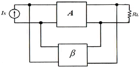
- 전류-직렬
- 전압-직렬
- 전류-병렬
- 전압-병렬
(정답률: 57%)
5. 다음 그림과 같은 회로는 어떤 필터(Filter) 역할을 하는가?
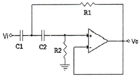
- HPF(High Pass Filter)
- LPF(Low Pass Filter)
- BPF(Band Pass Filter)
- BRF(Band Reject Filter)
(정답률: 91%)
6. 다음 중 효율이 가장 높은 증폭 방식은?
- A급
- B급
- AB급
- C급
(정답률: 87%)
7. 다음 중 발진기와 관련이 없는 것은?
- 부궤환
- 정궤환
- 수정편
- VCO
(정답률: 82%)
8. 다음 그림과 같은 윈 브리지 발진기에서 제너 다이오드의 역할을 무엇인가?
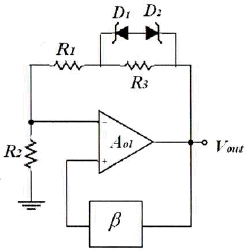
- 발진기의 출력전압을 제어하기 위한 것이다.
- 발진기의 자기 시동을 위한 장치이다.
- 폐루프 이득이 1이 되도록 한다.
- 궤환신호의 위상이 입력위상과 동상이 되도록 한다.
(정답률: 60%)
9. 다음 중 아날로그 변조 방식의 진폭변조(AM)에 대해 맞게 설명한 것은?
- 아날로그 정보 신호에 따라 반송파 신호의 진폭을 변화시키는 방식
- 반송파 신호에 따라 아날로그 정보 신호의 진폭을 변화시키는 방식
- 아날로그 정보 신호에 따라 반송파의 진폭과 위상을 변화시키는 방식
- 반송파 신호에 따라 아날로그 정보 신호의 위상을 변화시키는 방식
(정답률: 69%)
10. 다음 중 누화, 잡음 및 왜곡 등에 강하고 전송 특성의 질이 저하된 전송로에도 사용가능한 다중 전송방식은?
- AM 주파수분할 다중 전송방식
- FM 주파수분할 다중 전송방식
- PM 주파수분할 다중 전송방식
- PCM 시분할 다중 전송방식
(정답률: 82%)
11. 듀티 사이클(Duty Cycle)이 0.1이고 주기가 30[ms]인 펄스의 폭은 얼마인가?
- 0.3[ms]
- 1[ms]
- 3[ms]
- 10[ms]
(정답률: 92%)
12. 다음 중 클리퍼(Clipper) 회로에 대한 설명으로 옳은 것은?
- 입력 파형을 주어진 기준전압 레벨 이상 또는 이하로 잘라내는 회로
- 일정한 레벨 내에서 신호를 고정시키는 회로
- 특정 시각에 발진 동작을 시키는 회로
- 안정 상태와 준안정 상태를 번갈아 동작하는 회로
(정답률: 90%)
13. 2진코드를 그레이코드(Gray Code)로 변환하여 주는 논리식으로 맞는 것은?
- OR
- NOR
- XOR
- XNOR
(정답률: 73%)
14. 8진수 666.6을 10진수로 변환한 값은 얼마인가?
- 430.75
- 434.75
- 438.75
- 442.75
(정답률: 73%)
15. 부울 대수의 정리 중 틀린 것은?
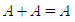
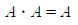
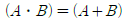
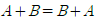
(정답률: 77%)
16. 다음 중 순서 논리 회로에 대한 설명으로 틀린것은?
- 입력 신호와 순서 논리 회로의 현재 출력상태에 따라 다음 출력이 결정된다.
- 조합 논리 회로는 사용할 수 없다.
- 순서 논리 회로의 예로 카운터 레지스터 등이 있다.
- 데이터의 저장 장소로 이용 가능하다.
(정답률: 89%)
17. 5비트 리플 카운터(Ripple Counter)의 입력에 4[MHz]의 구형파를 인가할 때, 최종단 플립플롭의 주파수는?
- 125[kHz]
- 250[kHz]
- 500[kHz]
- 800[kHz]
(정답률: 67%)
18. 여러 개의 입력선 중에서 하나를 선택하여 출력선에 연결하는 조합 논리회로를 무엇이라고 하는가?
- 멀티플렉서(Multiplexer)
- 인코더(Encoder)
- 디코더(Decoder)
- 채널(Channel)
(정답률: 100%)
19. 다음 중 M×N 디코더(Decoder)에 대한 설명으로 틀린 것은?
- AND 회로의 집합으로 구성할 수 있다.
- 2진수를 10진수로 변환하는 회로이다.
- 10진수를 BCD로 표현할 때 사용한다.
- 명령 해독이나 번지를 해독할 때 사용한다.
(정답률: 96%)
20. 다음 중 전원이 차단되었을 때 데이터가 지워지는 소자는?
- EPROM(Erasable Programmable Read Only Memory)
- EEPROM(Electrically Erasable Programmable Read Only Memory)
- NVRAM(Non-volatile Random Access Memory)
- SDRAM(Synchronous Dynamic Random Access Memory)
(정답률: 84%)
2과목: 방송통신 기기
21. 다음 중 스튜디오 부조정실에 대한 설명으로 옳지 않은 것은?
- “부조”라고도 하며, 스튜디오 프로그램 제작의 지휘실이다.
- PD(Program Director)와 TD(Technical Director)가 사용한다.
- 송신기가 설치되어 있다.
- 카메라제어기(CCU), 스위처, 오디오, 콘솔이 설치되어 있다.
(정답률: 89%)
22. 다음 중 영상 제작 설비와 관련 없는 것은?
- Camera
- Video Switcher
- VDA
- ADA
(정답률: 85%)
23. 다음 문장은 무엇에 관한 설명인가?
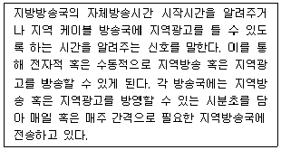
- 칼라바
- 큐톤 신호
- 임베디드(Embeded) 신호
- 버스트 신호
(정답률: 79%)
24. 다음 중 국내 DMB방송에 사용되는 오디오 혹은 비디오 압축전송 방식이 아닌 것은?
- H.264
- BSAC
- MUSICAM
- MPEG-1
(정답률: 65%)
25. 방송주파수가 1,000[kHz]인 송신소에서 5/8[λ] 공중선을 사용할 경우 그 높이는?
- 140.5[m]
- 187.5[m]
- 201.5[m]
- 300[m]
(정답률: 71%)
26. FM 방송의 다중방송방식은 어느 방식을 사용하는가?
- FDM
- TDM
- CDMA
- WDM
(정답률: 87%)
27. 100[kHz]로 샘플링하고 샘플링당 10비트를 할당하는 경우 10초 동안 생성되는 비트수는?
- 1⑤
- 106
- 107
- 108
(정답률: 87%)
28. 다음 중 TV 방송의 기본 원리에 대한 설명으로 가장 올바른 것은?
- 영상을 만들어 내어 전송하고 기록해서 컬러 화면으로 시청하도록 하는 것
- 화상을 화소로 분해하여 전기신호화 하고 이것을 주사방식에 의해 화상신호로 전송하는 것
- 색상, 명도, 포화도 등의 색의 3속성을 주파수 변조하는 것
- 주사선수 525개를 1,125개로 늘려서 전송하는 것
(정답률: 72%)
29. 다음 중 세계적으로 통용되고 있는 텔레비전 방식이 아닌 것은?
- PAL 방식
- SECAM 방식
- CDMA 방식
- NTSC 방식
(정답률: 84%)
30. CD는 스테레오 신호를 각각 44.1[kHz]로 표본화하여 각 비트당 16비트를 할당하고 있다. 초당 기록되는 정보량은 얼마인가?
- 약 1.4[Mbps]
- 약 50[Mbps]
- 약 270[Mbps]
- 약 1.5[Gbps]
(정답률: 83%)
31. 다음 그림은 고출력 디지털 TV 중계기의 블록도이다. 괄호안에 들어갈 기능 블록으로 알맞게 짝지어진 것은?
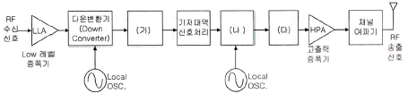
- ㈎ : 익사이터(Exciter), ㈏ : 복조기, ㈐ : 업 변환기(Up Converter)
- ㈎ : 복조기, ㈏ : 변조기, ㈐ : 업 변환기(Up Converter)
- ㈎ : 복조기, ㈏ : 변조기, ㈐ : IF 여파기 및 증폭기
- ㈎ : IF 여파기 및 증폭기, ㈏ : 변조기, ㈐ : 업 변환기(Up Converter)
(정답률: 77%)
32. 다음 중 국내 지상파DMB 서비스를 위한 요구사항이 아닌 것은?
- 비디오 객체의 형식은 화소수를 기준으로 352×288@30fps 형태의 비디오 제공
- 화질은 7인치급 LCD 표시장치에서 VCD급 화질을 제공
- CD 수준의 음질을 제공
- 8VSB 변조방식 적용
(정답률: 87%)
33. 특성 임피던스 Zo=50[Ω]의 선로에 부하 저항으로 75[Ω]을 연결한 경우 정재파비(VSWR) 값은 얼마인가?
- 0.2
- 0.4
- 1
- 1.5
(정답률: 91%)
34. 아날로그 신호를 디지털 신호로 변환할 때 표본화된 신호값을 일정한 스텝의 정수배로 표현하는 과정에서 표본값과 차이가 잡음으로 나타나는 것을 무엇이라 하는가?
- 표본화 잡음
- 양자화 잡음
- 부호화 잡음
- 주파수 변환 잡음
(정답률: 72%)
35. 비디오 특성 측정에 사용되는 시험 패턴에서 멀티버스트 신호는 어느 용도에 가장 적합한가?
- 주파수대 위상 측정
- 주파수대 진폭특성 측정
- 과도잡음 특성 측정
- 비직선 왜곡 측정
(정답률: 56%)
36. 다음 중 위성 방송 수신기의 기기 및 역할과 관계가 먼 것은?
- 셋톱 박스
- EPG
- CAS
- 부호화기
(정답률: 79%)
37. 다음 중 송출기 시험시 스퓨리어스 발사강도가 허용치 이내인지를 조사할 수 있는 장비는?
- 파형모니터
- 주파수 카운터
- 오실로스코프
- 스펙트럼 아날라이져
(정답률: 90%)
38. CATV 증폭기에서 2개 이상의 신호를 증폭하는 경우 증폭기의 비직선 왜곡에 의해서 다른 신호내용이 겹치게 되는 것을 무엇이라 하는가?
- 혼변조
- 험(Hum)변조
- 과변조
- 누화
(정답률: 75%)
39. 다음 중 영상반송파에 대한 설명으로 옳지 않은 것은?
- TV 채널의 각종 잡음이 TV 신호보다 작도록 하여 양호한 TV 화질을 유지하기 위하여 C/N비를 측정한다.
- 영상반송파의 레벨안정도는 동일채널에서 영상반송파의 신호레벨이 1분 동안 변동한 폭을 측정한다.
- 인접채널간 영상반송파의 레벨차는 통상 3[dB]를 넘지 말아야 한다.
- C/N비는 송신기 출력단에서 검파출력을 측정하고 검파된 잡음레벨과의 비를 측정하는 것이다.
(정답률: 61%)
40. 영상신호의 색신호 성분을 복조하여 그 위상과 진폭을 브라운관상에 벡터로 표시하는 것은?
- 마스터 모니터
- 벡터스코프
- 파형 모니터
- 오실로스코프
(정답률: 96%)
3과목: 방송미디어 개론
41. 다음 중 비월주사의 특징이 아닌 것은?
- 순차주사에 비해 화질을 떨어뜨림이 없이 영상신호의 주파수 대역을 반으로 할 수 있다.
- 한 칸씩 뛰어넘어 주사하고 다시 그 사이를 반복 주사시키는 방법이다.
- 비월주사를 사용하는 것은 필요한 대역폭을 증가시키지 않고 TV 수상화면의 플리커를 감소시킬 수 있기 때문이다.
- TV 수상화면에 깜박임과 같은 광도의 변화가 심하다.
(정답률: 74%)
42. 케이블 TV의 사업구도에서 지역사업권을 가지고 프로그램의 편성과 송출을 담당하는 사업자는 무엇인가?
- Program Provider
- System Operator
- Network Operator
- Cable Provider
(정답률: 83%)
43. FM 스테레오 방송의 음향신호 최고 주파수는 몇 [kHz]인가?
- 3
- 9
- 12
- 15
(정답률: 27%)
44. 수평톱니파의 주파수가 15,750[Hz]이며, 귀선시간이 18[%]일 때 1회 유효주사선 시간은 약 얼마인가?
- 3[μs]
- 16[μs]
- 52[μs]
- 63[μs]
(정답률: 82%)
45. 영상 및 음성으로 된 방송신호를 반송파에 실어 전송에 적합한 형태로 만드는 것을 무엇이라 하는가?
- 변조
- 복조
- 코딩
- 디코딩
(정답률: 91%)
46. 최고 주파수 20,000[Hz] 오디오를 10초간 저장하기 위해 필요한 데이터량은? (단, 샘플링 주파수는 나이퀴스트 이론에 의한 최소 주파수를 사용하며 A/D(아날로그/디지털) 변환기는 16비트이다.)
- 200[KB]
- 400[KB]
- 800[KB]
- 2[MB]
(정답률: 65%)
47. 영상을 압축하는 방식 중 반복되어 나타나는 블록 정보들을 그 반복 횟수로 표현하는 부호화 방식은?
- Run length code
- Lempel-Ziv-Welch code
- Huffman code
- Trellis code
(정답률: 78%)
48. 다음 미디어가 잘못 짝지어진 것은?
- 신문 - 인쇄미디어
- 전화 - 음향미디어
- TV - 멀티미디어
- Telegram - 영상미디어
(정답률: 90%)
49. 다음 보기 중 기존 신문에 대한 인터넷신문의 장점으로 가장 거리가 먼 것은?
- 상호작용성
- 속보성
- 접근성
- 단방향성
(정답률: 100%)
50. 영문 코드를 표현하는 ASCII 방식으로 표현 가능한 코드의 수는?
- 32
- 64
- 128
- 256
(정답률: 82%)
51. 위성방송 수신시 필요한 수신 시스템이 아닌것은?
- 접시안테나(Parabolic Antenna)
- 저 잡음 주파수변환기(LNB)
- 단말기(Set Top Box)
- 변조기
(정답률: 75%)
52. 우리나라 지상파(ATSC) 방송의 데이터방송 표준규격은?
- DVB-MHP(Digital Video Brodcasting-Mulitmedia Home Platform)
- ACAP(Advanced Common Application Platform)
- OCAP(Open Cable Application Platform)
- MHW(Media High Way)
(정답률: 67%)
53. MPEG 영상 데이터의 구조에서 4:2:0의 샘플링인 경우 매크로 블록(Macroblock)을 구성하기 위한 휘도 및 색차신호 Y, Cb, Cr의 블록 개수를 순서대로 나열한 것은?
- 4, 2, 0
- 4, 0, 2
- 4, 1, 4
- 4, 2, 2
(정답률: 47%)
54. VTR 편집에서 나선형 주사 녹화기에는 테이프의 속도로 인한 오차가 발생하는데 이것을 방지하기 위한 것은?
- 테이프 오류 교정기(TEC)
- 전자 신호 교정기(ESC)
- 타임 베이스 교정기(TBC)
- 영상 디지털 교정기(VDC)
(정답률: 77%)
55. 우리나라 디지털 지상파 TV의 변조방식은?
- 8VSB
- QAM
- FSK
- BPSK
(정답률: 91%)
56. 영상압축의 주요 적용 기술 중 화면과 화면 사이의 움직임도 장면전환을 제외하면 같은 장면에서는 급격히 변화하지 않아 많은 상관성이 존재한다. 이를 무엇이라 하나?
- 가변 부호성
- 양자화성
- 시간적 중복성
- 공간적 중복성
(정답률: 77%)
57. 다음 중 동영상정보의 압축방법으로 옳지 않은 것은?
- 화면내 상관관계를 이용한다.
- 화면간 상관관계를 이용한다.
- 주사선의 시간을 이용한다.
- 부호의 발생확률이 서로 다름을 이용한다.
(정답률: 63%)
58. 영상압축 시스템 MPEG-2의 프레임별 특성에서 I 픽쳐(Intra Picture)를 설명한 것으로 옳은 것은?
- 예측 부호화 영상
- 프레임간 순방향 영상
- 쌍방향 예측부호화 영상
- 프레임 내에서의 부호화 영상
(정답률: 78%)
59. 다음의 방송송출 및 중계시스템 중에서 위성과 관련이 있는 것은 무엇인가?
- FM
- STL
- TSL
- SNG
(정답률: 72%)
60. PTV 엔코더(encoder)에서 H.264 기능과 관련있는 것은?
- 압축
- 다중화
- 스크램블링
- IP 패킷화
(정답률: 79%)
4과목: 전자계산기 일반 및 방송설비기준
61. 다음 중 DRAM에 대한 설명으로 맞는 것은?
- 플립플롭 회로를 사용하여 만들어졌다.
- 모든 메모리 유형 중에서 가장 빠르다.
- 일반적으로 CPU의 레지스터나 캐시 메모리에만 사용된다.
- 저장된 데이터를 유지하기 위해 계속적으로 데이터를 새롭게 하는 것이 필요하다.
(정답률: 79%)
62. 다음 빈칸에 들어갈 내용이 순서대로 된 것은?
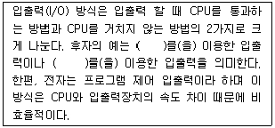
- 인터럽트, DMA
- DMA, IOP
- IOP, 인터럽트
- 인터럽트, 프로그램
(정답률: 68%)
63. 다음 괄호 안에 들어갈 내용이 순서대로 된 것은?
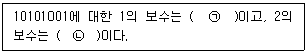
- ㉠ 01010110 ㉡ 01010111
- ㉠ 01010101 ㉡ 01010101
- ㉠ 01011010 ㉡ 01011011
- ㉠ 01011011 ㉡ 01011110
(정답률: 86%)
64. 다음 중 해밍코드에 대한 설명으로 틀린 것은?
- 오류를 검출 및 교정할 수 있다.
- 정보 비트의 길이에 따라 패리티 비트의 수가 결정된다.
- 한 비트당 최소한 두 번 이상의 패리티 검사가 이루어진다.
- 해밍코드에서 4개의 정보 비트를 체크하기 위한 최소한의 패리티 비트는 2개가 된다.
(정답률: 78%)
65. 사용자가 컴퓨터의 본체 및 각 주변장치 등을 가장 효율적이고 경제적으로 사용할 수 있도록 하는 프로그램을 무엇이라 하는가?
- 컴파일러(Compiler)
- 로더(Loader)
- 매크로(Macro)
- 운영체제(Operating System)
(정답률: 100%)
66. 다음 중 메모리의 기능과 디스크의 기능을 동시에 수행할 수 있는 비 휘발성 메모리를 무엇이라고 하는가?
- DMA(Direct Memory Access)
- VTL(Virtual Tape Library)
- Flash Memory
- SDRAM(Synchronous Dynamic Random Access Memory)
(정답률: 66%)
67. 다음 중 컴퓨터 프로그래밍 언어의 번역프로그램이 아닌 것은?
- 어셈블러
- 인터프리터
- 컴파일러
- 기호어
(정답률: 92%)
68. 다음 중 이미 완제품으로 출시된 프로그램 중에 존재하는 오류 또는 버그(Bug)를 수정하기 위하여 일부 파일을 변경해 주는 프로그램을 무엇이라 하는가?
- Bundle
- Freeware
- Shareware
- Patch
(정답률: 91%)
69. 프로그램의 에러나 디버깅 등의 목적을 수행하기 위해 메모리에 저장된 내용의 일부 또는 전부를 화면이나 프린터, 디스크 파일 등으로 출력하는 것을 무엇이라 하는가?
- 링커(Linker)
- 디버거(Debugger)
- 로더(Loader)
- 메모리 덤프(Memory Dump)
(정답률: 77%)
70. 다음 중 인터럽트의 우선순위가 가장 높은 것은 무엇인가?
- 전원 Reset 인터럽트
- 입출력 인터럽트
- 외부 인터럽트
- SVC(Supervisor Call)
(정답률: 87%)
71. 음악산업진흥에 관한 법률과 관련된 방송은?
- 중계유선방송
- 음악전송방송
- 음악유선방송
- 중계전송방송
(정답률: 95%)
72. 방송법에 의한 용어의 정의로 괄호 안에 적합한 것은?
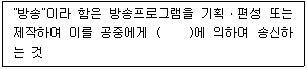
- 전기통신설비
- 정보통신설비
- 유선방송설비
- 전송통신설비
(정답률: 69%)
73. 방송법령에서 규정하는 특수관계자의 범위내에서 특수관계자에 해당되지 않는 사항은?
- 배우자관계
- 6촌 이내의 혈족 관계
- 4촌 이내의 인척관계
- 임ㆍ직원 관계
(정답률: 96%)
74. 다음 중 방송법의 궁극적 목적에 해당되는 것은?
- 방송의 발전과 공공복리의 증진에 이바지
- 표준말 보급
- 방송사의 권익보호
- 지역사회의 발전
(정답률: 90%)
75. 한국방송공사 이사회의 기능에서 심의ㆍ의결 사항이 아닌 것은?
- 각 방송국의 공사계획 및 시공감리에 관한 사항
- 공사가 행하는 방송의 공적 책임에 관한 사항
- 지역방송국의 설치 및 폐지에 관한 사항
- 공사가 행하는 방송의 기본운영계획에 관한 사항
(정답률: 60%)
76. 낙뢰 또는 강전류 전선과의 접촉 등에 의한 이상 전류 또는 이상 전압의 유입을 제한하거나 차단하는 장치를 무엇이라 하는가?
- 보호기
- 차단기
- 누설차단기
- 적산전력계
(정답률: 87%)
77. 다음 중 주파수대의 주파수 범위와 미터 표시로 틀리게 연결된 것은?
- 300[kHz] 초과 3,000[kHz] 이하 - 센티미터파
- 30[MHz] 초과 300[MHz] 이하 - 미터파
- 300[MHz] 초과 3,000[MHz] 이하 - 데시미터파
- 30[kHz] 초과 300[kHz] 이하 - 킬로미터파
(정답률: 95%)
78. 다음 중 디지털 지상파 텔레비전방송의 영상신호의 조건으로 틀린 것은?
- 프로그램 채널당 영상 부호화 목표 비트율은 최대 194.[Mbps]로 하여야 한다.
- 부호화 기본 알고리즘은 MPEG-2 MP@HL을 따라야 한다.
- 영상과 관련된 폐쇄자막 데이터의 비트율은 4,800[bps] 이하로 하여야 한다.
- 부호화 기본 알고리즘은 MPEG-2 MP@ML을 따라야 한다.
(정답률: 46%)
79. 중계유선방송 및 음악유선방송의 질적수준에 있어 누설전자파는 216[MHz] 초과인 경우에 몇 [μV/m] 이하를 만족해야 하는가? (단, 30[m] 거리에서 측정시)
- 13[μV/m]
- 14[μV/m]
- 15[μV/m]
- 16[μV/m]
(정답률: 48%)
80. 국내의 디지털 지상파 방송에서 1채널당 점유 주파수 대역폭은?
- 4.5[MHz]
- 6.0[MHz]
- 7.0[MHz]
- 8.0[MHz]
(정답률: 96%)